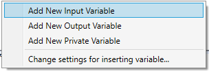
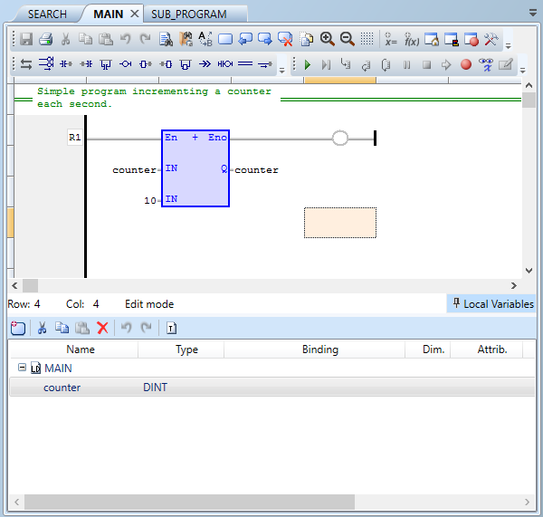
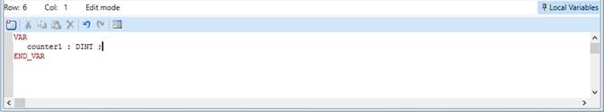

All IEC 61131-3 programs have local variables, which are private to the program there are declared within and so only accessible by that program. User defined function blocks and sub-programs also have input, output and private variables.
Program local variables are edited inside the variable editor just as normal variables. However, when adding a new variable to a program, if the program is a user defined function block or a sub-program Motion Perfect asks whether the new variable should be created as an input, output or private.

The previous local variabl es editor has been removed as it is now redundant, and its functionality has been integrated into the main variables editor.
Program local variables can be also edited with a dedicated editor which can be found at the bottom of each IEC 61131-3 source code editor and is accessible as an expander button. When pressed, an inline editor is expanded where local variables can be edited either in the normal editor or in text mode.

The editor operates in two modes:
The following commands are available from its toolbar:
|
Command |
Description |
|
Insert New Variable |
Inserts new local program variable |
|
Cut |
Cut the selected variable |
|
Copy |
Copy the selected variable |
|
Paste |
Paste a variable from the Clipboard |
|
Delete |
Delete the selected variable |
|
Undo |
Undo last operation |
|
Redo |
Redo last operation |
|
Edit variables as text / Apply Changes and return to grid mode |
Switches from grid to text mode and vice versa. |
Latest version of Motion Perfect supports editing of variables in text mode, which could be used when importing data from another IEC 61131-3 system, for example, or copying and pasting multiple variables into Motion Perfect program editor.

Please note that in text mode, unlike in grid mode, where all edit operations are immediate, changes are applied either when compiling the IEC 61131-3 task or when explicitly switching back to grid mode.